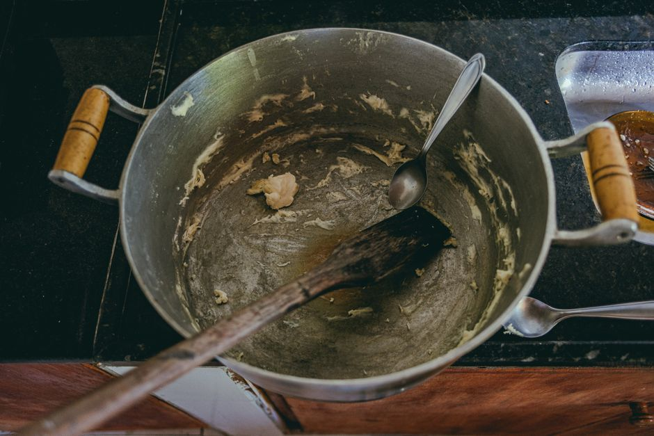
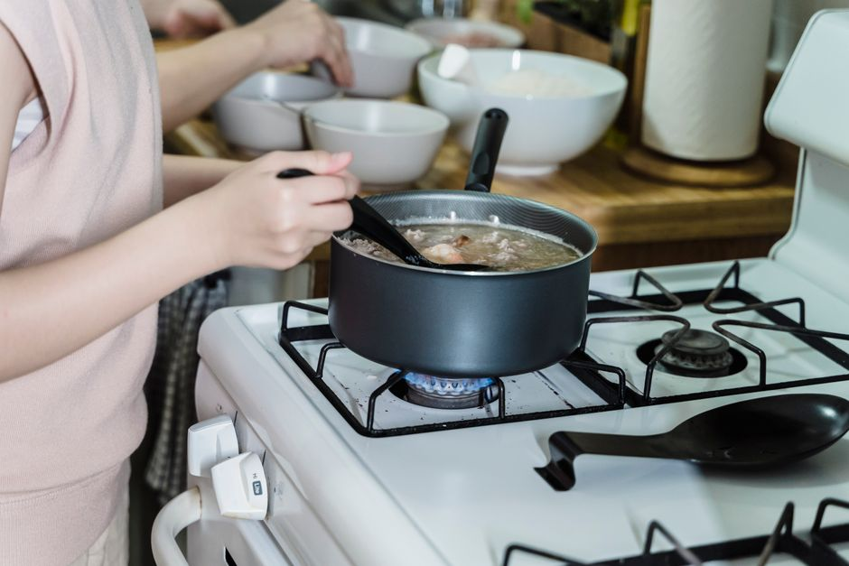

Maneras de Transformar Restos en Platos Económicos Sin Llegar a la Monotonía
¿Sabías que puedes ahorrar hasta un 30% en tu presupuesto de alimentación utilizando técnicas creativas para transformar tus restos de comida? En este artículo, te enseñaremos 5 formas efectivas de hacerlo sin caer en la monotonía. ¡Empieza a ahorrar hoy mismo!

Photo: Matheus Alves / Pexels
1. Combinar restos de ensaladas
¡No dejes que los restos de tu ensalada se desperdicien! Puedes combinarlos para hacer un nuevo plato. Por ejemplo, si tienes una ensalada de lechuga con tomates y espinacas, mezcla estos ingredientes con queso fresco y pollo ahumado para hacer un delicioso wrap de ensalada. Solo necesitas mezclar los ingredientes, enrollarlos en una hoja de lechuga grande y servir. Este wrap se puede preparar en solo 5 minutos.
2. Crear sopa de restos

Photo: Annushka Ahuja / Pexels
¿Tienes verduras, carnes y legumbres que ya no sabes qué hacer? ¡Haz una sopa de restos! Solo necesitas combinar estos ingredientes con agua o caldo y cocinar durante 20 minutos. Agrega un poco de sal y pimienta al gusto. Este método no solo te ahorra dinero, sino que también es una excelente manera de aumentar la ingesta de proteínas y fibra en tu dieta.
3. Hacer pastel de verduras
Si tienes muchas verduras que se están secando, no te preocupes. Puedes hacer un delicioso pastel de verduras. Corta tus verduras en trozos pequeños, añádelas a una mezcla de huevos batidos y pan rallado. Hornea durante 20-25 minutos a 180°C. Este plato puede guardarse en el refrigerador por hasta 5 días y se puede preparar con una variedad de verduras, asegurándote de que nunca te aburras.
4. Preparar platos con base en lasaña
Si tienes restos de carnes y verduras, puedes hacer una deliciosa base de lasaña. Solo necesitas cocinar tus ingredientes, mezclarlos con un poco de salsa de tomate y espesar con masa de lasaña. Cubre todo con más salsa y masa, hornea durante 30 minutos a 180°C y listo. ¡Eso es todo! Este plato puede ser muy variado y sabroso, dependiendo de los ingredientes que utilices.
5. Crear guisos con restos de carne
¿Has sobrado trozos de carne en la sartén? No los dejes tirar, utiliza estos restos para hacer un delicioso guiso. En una sartén grande, añade un poco de aceite y cocina la carne a fuego lento durante 15-20 minutos. Agrega verduras como cebolla, ajo y pimientos, y cocina durante 10 minutos más. Finalmente, añade caldo de pollo y cocina durante 20 minutos más a fuego medio-bajo. Este guiso es perfecto para servir con arroz o pan.
Conclusión
Transformar restos en platos económicos es más fácil de lo que parece. Con estas 5 técnicas, podrás ahorrar en tu presupuesto de alimentación y seguir disfrutando de una variedad de sabores sin caer en la monotonía. ¡Empieza a poner en práctica estos consejos hoy mismo y comienza a ahorrar!